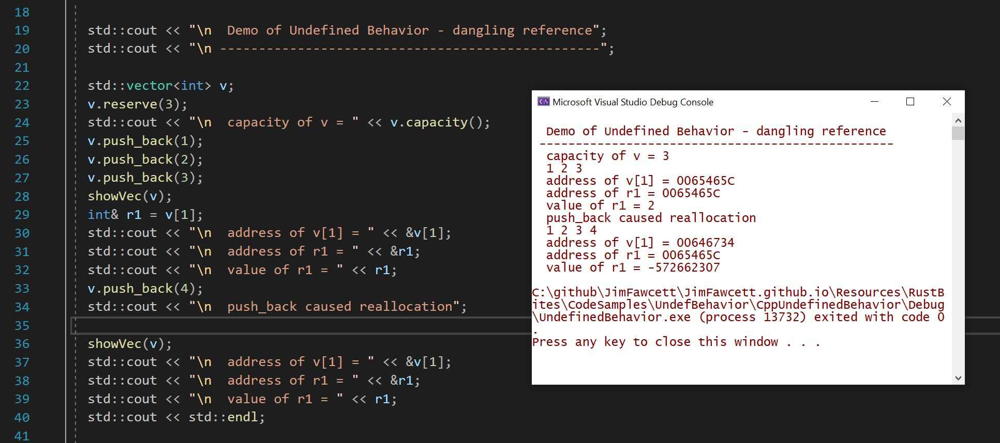
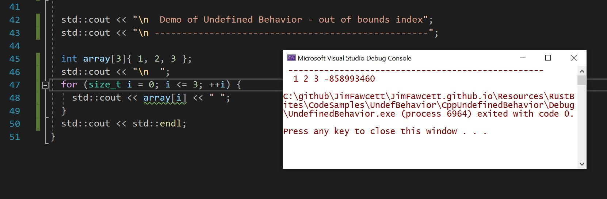
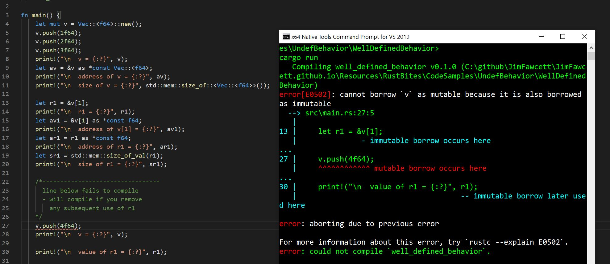
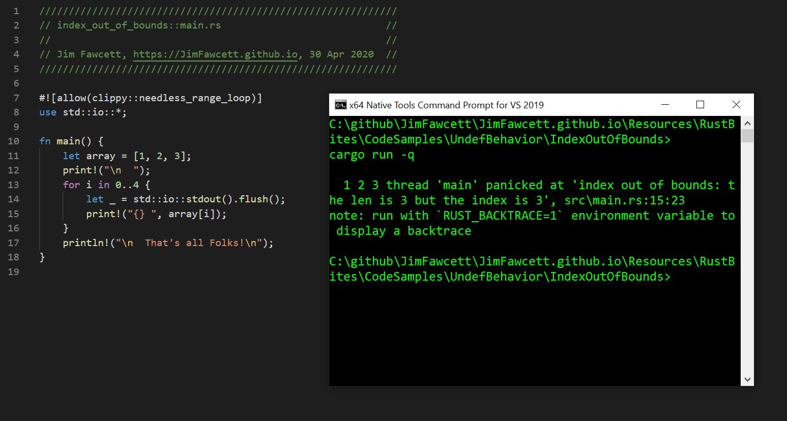

about
04/13/2022
RustBites - Undefined Behavior
Rust/C++ Bite - Undefined Behavior
Reading from and writing to unowned memory
| - | Memory safety: | There is no way for code to access memory that it does not own. |
| - | Data race safety: | In a multi-threaded environment, all mutable non-atomic data shared between threads can only be accessed by one thread at a time. |
1.0 Examples of undefined behavior:
- Creating a std::vector<int>
- Filling it to capacity
- making a reference to one of its elements
- pushing back another element in the vector.
C++ Ref Unowned Memory
|  |
C++ Index out of Bounds
|  |
Rust Attempt to Ref Unowned Memory
|  |
Rust Index out of Bounds
|  |
2.0 Conclusions:
3. References:
Arguing about Undefined Behavior - video
UDB Examples - Wikipedia
Falsehoods about undefined behavior
Cost of Rust bounds checking